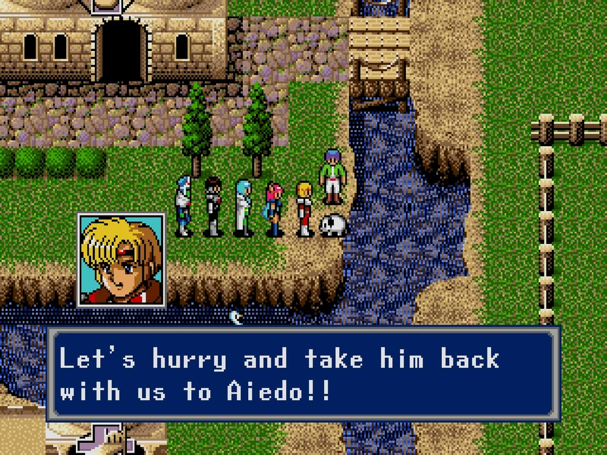

TINKERBELLS'S DOG
Reward: 5000 meseta
This is a request from the house where Tinkerbell lives. 'Our household pet 'Rocky' has disappeared. Please find him...' That is the message. This certainly doesn't seem to be the caliber of work for a hunter.
This job is available after fighting Zio the first time. Tinkbell's dog Rocky is missing. Buy some Shortcake in Aeido and head to Monsen or Termi to find it.